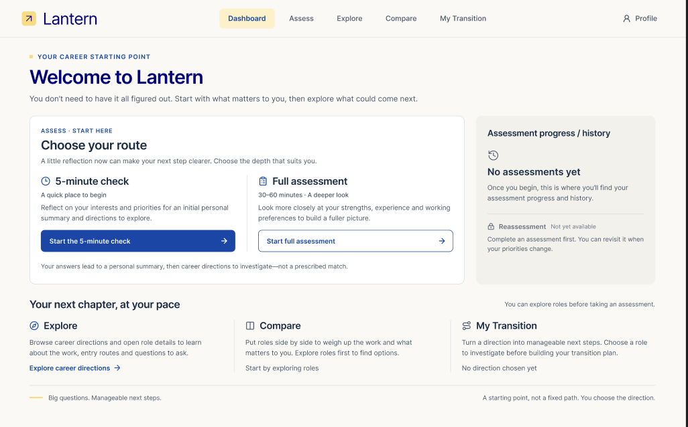

Lantern
A career exploration app that gives big career questions a more manageable starting point.
- My role
- Design and development
- Tools
- Next.js, TypeScript, Supabase, Figma
- Context
- Personal portfolio project

The problem
Career exploration can begin with an open-ended question: what should I do next? Lantern explores how a guided experience can make that first step easier to approach.
My contribution
I worked across the interface and frontend implementation, building the landing, authentication, and assessment experiences. The project connects my interest in user experience with hands-on development.
The approach
I organized the experience around a clear entry point, a consistent visual language, and a path from signing in to exploring career possibilities. Supabase supports authentication, while Next.js and TypeScript provide the application structure.
Where it stands
The project includes connected authentication and an evolving assessment flow. It is an ongoing build, and I am continuing to refine how users move from their answers to useful next steps.
What I’m thinking about
The most interesting design challenge is deciding how much guidance to offer without making the user feel boxed into a single path.